画像
写真の中の名前・文・ファイル名は試験用です。
はじめに
このページはアプリ版です。納品はアプリでします。
送る手順
1写真は試験用の案件です。
アプリで、この指示書の案件の画面を開く。
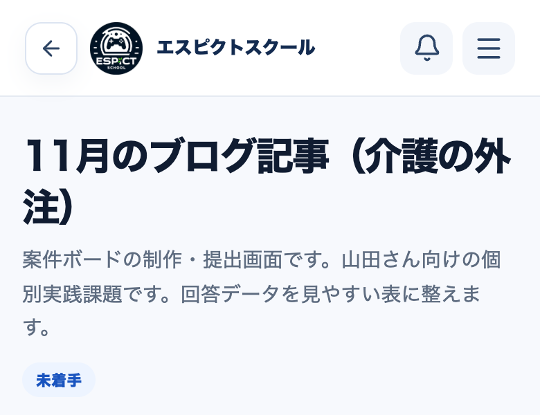
2
画面を下へ動かして、「案件の成果物を提出」の枠を見つける。（「ぴくとに相談・確認」の枠は別の物。ここには出さない）
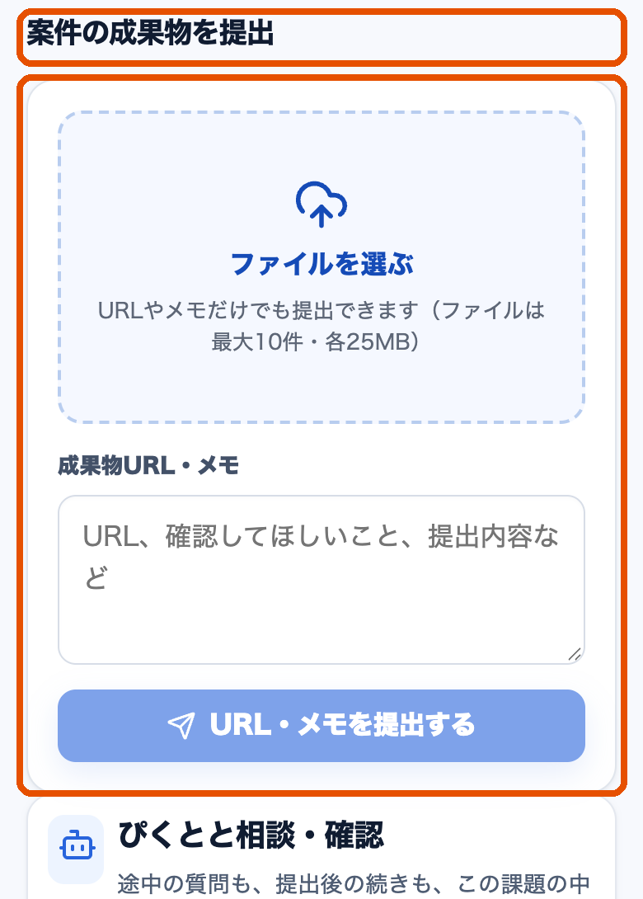
3
『ファイルを選ぶ』を押す。
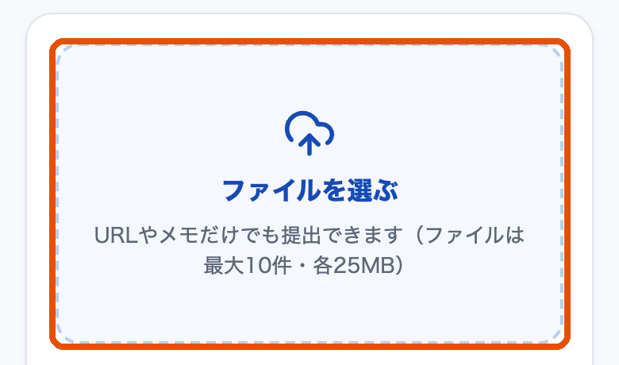
4ファイル名は試験用です。
保存した画像（PNG）を1枚選ぶ。選んだファイルの名前が、枠の中に出る。
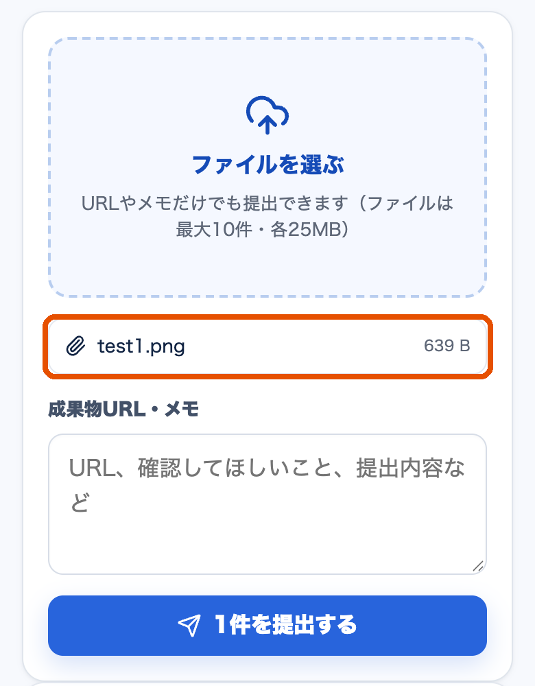
5写真の欄の文は試験用です。
「成果物URL・メモ」の欄に、送る文を貼る。（『送る文をコピー』を押してから貼る）
○○事業所 指示書のタイトル 11月5日 1枚目
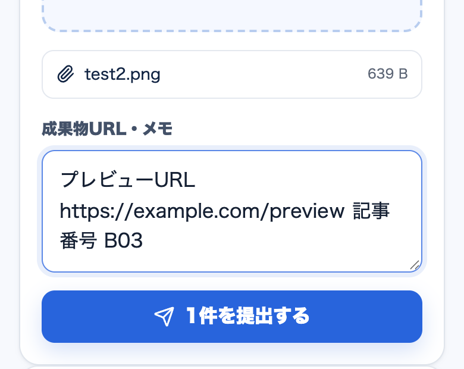
6
『1件を提出する』を押す。
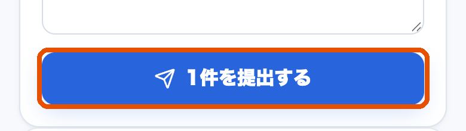
7
「1件のファイルを提出しました。」と出る。（画面を開きなおすと、この文は消える）
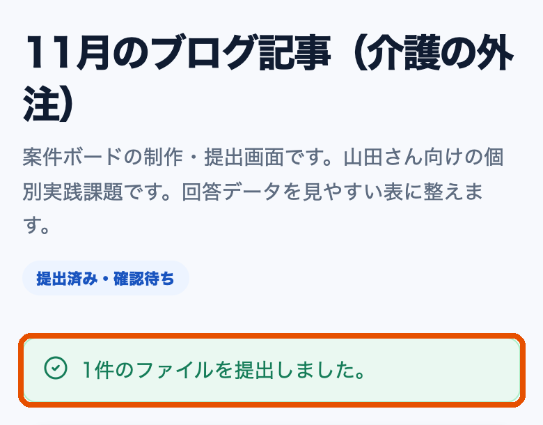
8写真の文とファイル名は試験用です。 画面の上のバッジ
画面の下の「提出履歴」を見る。日時・送る文・画像の名前が出ていて、右に「提出済み」と出ていれば、できた。画面の上のバッジも「提出済み・確認待ち」に変わる。
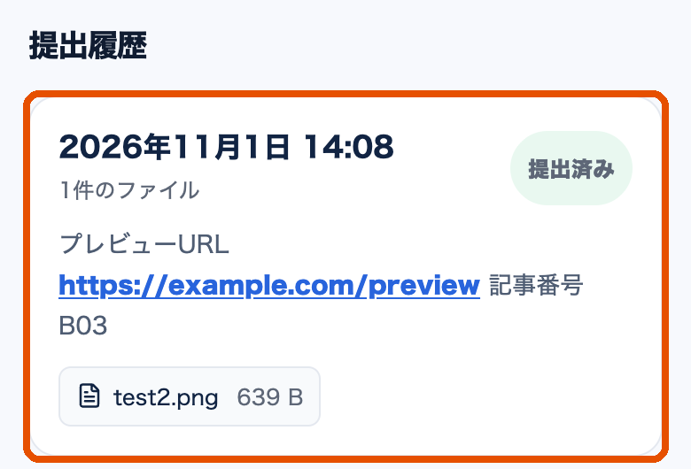
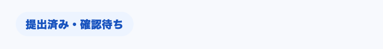
気をつけること
- 画像は、1枚ごとに出す。2枚目からも、3〜8をくり返す。
- ファイルを選びなおすと、前に選んだものは消える。1回に出す画像だけを選ぶ。
- 大きすぎる時は、選んだ時に「1ファイルは25MB以下にしてください。」と出る。そのファイルは付かない。
未確認25MBは試験の時の値です。本番の値は未確認。
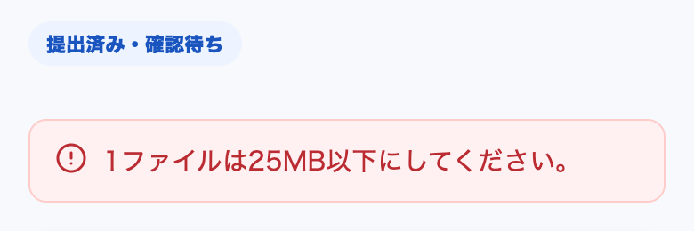
- 「受け取られた」という意味ではない。運営が見たあと、表示が「受領済み」に変わる。
未確認「受領済み」に変わる所は、まだ見ていません。
確かめていない所
- 未確認本番の設定の、1回に出せる数と大きさ。画面の文「ファイルは最大○件・各○MB」の○に、設定の値がそのまま入る。試験では10件・25MBと、1件・4MBを試した。本番の値は未確認。
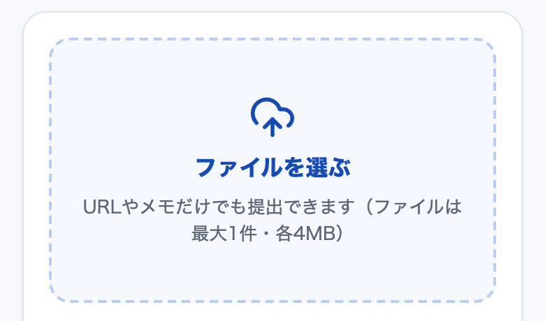
試験で1件・4MBの設定にした時 - 未確認「提出の保存結果を確認できませんでした」と『同じ内容で提出を再確認』の画面（通信失敗を作っていない）。
- 未確認「受領済み」への変化（運営側の操作が要る）。
- 未確認ぴくとの返事の見た目（まだ見ていません）。
ブログ
未定
SNS
未定